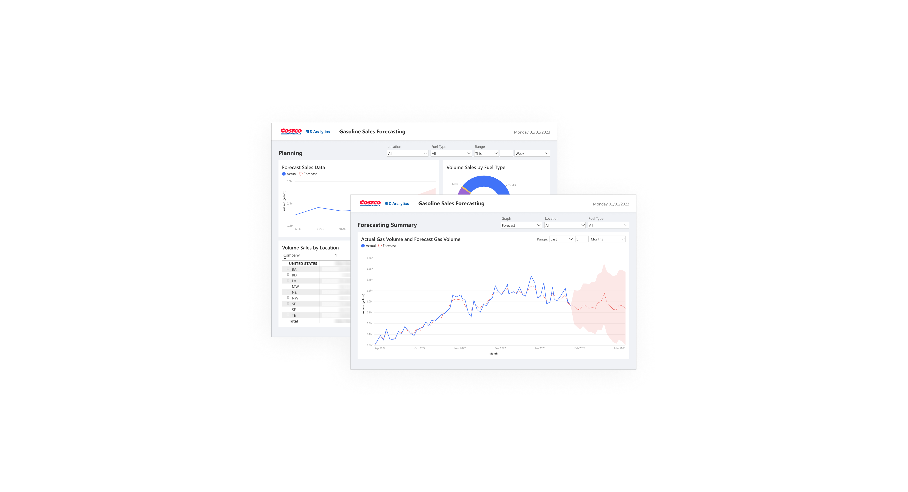

Costco Gasoline Sales Forecasting Report — Optimizing Dashboard Tooling
Overview
BACKGROUND
How might we improve the forecasting report in order to make it a more effective tool for stakeholders and users?
The data science team has created a Power BI forecast report for gasoline sales volumes at all Costco locations worldwide for all grades of fuel. The current report only displays the raw output and has no data visualizations that can effectively communicate different user needs and stories
For this project, I was tasked to develop designs an updated dashboard that included different data visualization views and new data analysis tools.
Internship project, 10 Weeks (January 2023 - May 2023)
THE TEAM
Working with the data science and analytics team at Costco
Without having much data science experience myself (other than taking a class in college), the Costco data science and analytics team never hesitated in helping me understand all things data science, from SQL to Power BI, and how to design effectively for data. The department is responsible for the reporting tools for all of Costco and their subsidiaries, but during my time there, I mainly worked with the gasoline purchasing/buying team.
Team: 1 ux designer/mentor, 1 data science/analytics manager, 1 gasoline central director, 2 data scientists/engineers, 1 ux design intern (that's me)
Tools: Figma, Power BI, Google Suite
Handing off
RECOMMENDATIONS
Updating Costco's Power BI design guidelines
Costco’s current Power BI design guidelines needed some work and this project was kind of a glimpse of what reports could look like if they were refreshed. During my final presentation, in front of the whole data analytics team, I advocated strongly for a new user friendly design guideline. That being said, I’m happy to have contributed to a future project for the product team.
RE-DO
If I were to do this project over again...
I would dedicate meeting time for design reviews rather than sending over design review documents; quicker feedback and room for open discussions.
Retropective
WHAT I LEARNED...
Working with design constraints is very feasible
I was very fortunate that in my past experiences, I mostly had free rein on the designs. Although this project let me explore outside of Costco’s design guidelines, it was my first time being limited to design to a software’s capabilities. And honestly, being constrained wasn’t as bad as I thought it was going to be! I may have had to omit using my fonts of choice, but I also learned about the importance of tabular spacing and letter accessibility. Costco overall improved my ability to adapt, compromise, and educate myself on things I’m unfamiliar with.
NEXT PROJECT:
WBEZ Browse Screen